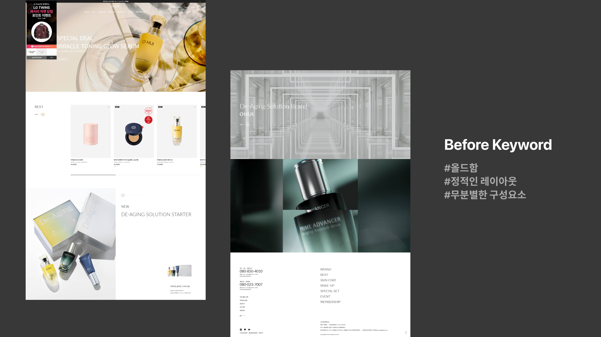

OHUI
뷰티 상품이라는 제품에 맞춰서 사용자들이 제품에
더 관심을 가질 수 있도록 인터렉션에 기반하여 리디자인한 사이트
REDESIGN OHUI



Background
“자전거” 라는 제품은 역동적인데 이러한 부분을
사용자에게 조금 더 잘 전달할 수 있는 방법은 없을까?
Strategy & Positioning
“자전거” 라는 제품은 역동적인데 이러한 부분을
사용자에게 조금 더 잘 전달할 수 있는 방법은 없을까?
As is - To be
“자전거” 라는 제품은 역동적인데 이러한 부분을
사용자에게 조금 더 잘 전달할 수 있는 방법은 없을까?
CONTENTS INFO
자전거 제품의 역동적인 느낌이 잘 들어나고 사용자가
더 흥미를 느낄 수 있도록 디자인했습니다.
CONTENTS INFO
자전거 제품의 역동적인 느낌이 잘 들어나고 사용자가
더 흥미를 느낄 수 있도록 디자인했습니다.